Talvez você estranhe um pouco esse novo modelo, mas ele é a 2ª versão. Vou atualizar ele toda vez que tivermos uma nova história, a fim de preservar os mínimos detalhes, sendo esse o projeto da minha vida. Meu objetivo final é ir melhorando cada vez mais ele, até que chegue a um ponto de deixar algo simples e torná-lo como se fosse um livro. Cada dia significa um capítulo, e não existe uma previsão para a quantidade deles.
Linha do Tempo
Logo abaixo, temos uma linha do tempo, feita especialmente para servir como forma de relembrar vários momentos que compartilhamos juntos. Infelizmente, não são todos eles. Além do mais, algumas datas podem não coincidir, devido ao fato de eu poder ter esquecido o dia (é o mais provável). Mas tenho uma certeza com tudo isso: caso eu esqueça de algo, é só eu vir aqui e olhar. O mesmo se aplica a você. Claro, o que está escrito nesse projeto é a minha visão, então você pode acabar discordando de algo.
Nossa história juntos começou no dia..
15/10/2025
Foi nesse dia que tudo começou, tudo graças a uma viagem escolar voltada para a premiação da diretora da escola. Nessa viagem, nós dois sentamos juntos e andamos para todos os cantos juntos. Aconteceram alguns momentos tristes, como você perdendo o celular e saindo desesperada atrás da Rayka. Porém, eu acabei encontrando o celular logo depois, e tudo se resolveu. Também houve momentos felizes, como nós dois dividindo um fone de ouvido e conversando. Infelizmente, nenhum dos dois tomou a iniciativa naquele dia.
19/10/2025
Essa foi a primeira "cantada" que eu te mandei. Foi em um domingo chuvoso, e eu estava na casa da minha vó. Então, o Julio me mandou uma mensagem dizendo para eu te mandar uma cantada. Tomei coragem e enviei. Me recordo de que você demorou muito para me responder; eu já não aguentava mais de angústia e ansiedade. Até que você respondeu e curtiu a mensagem. Fiquei todo feliz e bobo, não consegui me segurar e logo contei para o meu pai e para a minha mãe.
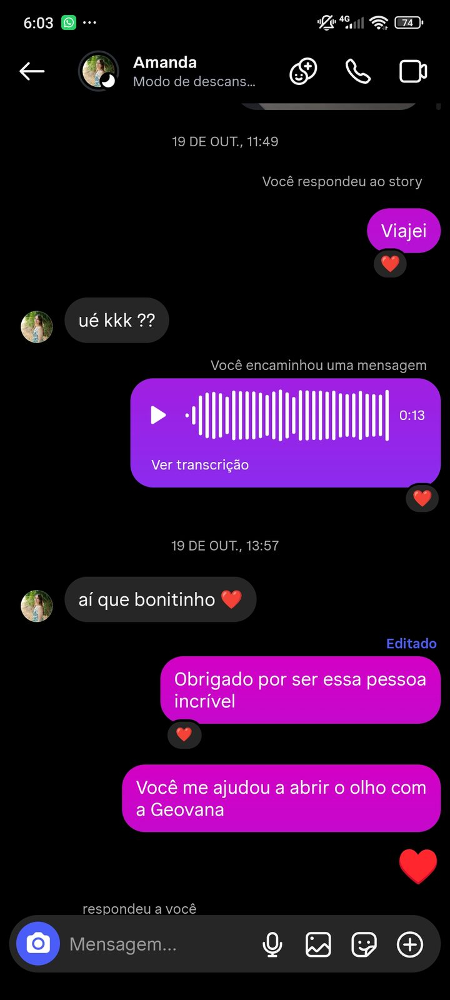
04/11/2025
Algumas das primeiras cartas que escrevi para você. Eu estava um pouco receoso de escrever ou mandar, porque era a primeira vez que estava vivendo esse momento. Mas deixei isso de lado e segui escrevendo. Cada uma era feita com muito amor e carinho. Eu não queria que elas fossem feias, por isso comecei a tentar desenhar rosas em todas, para tentar te agradar.
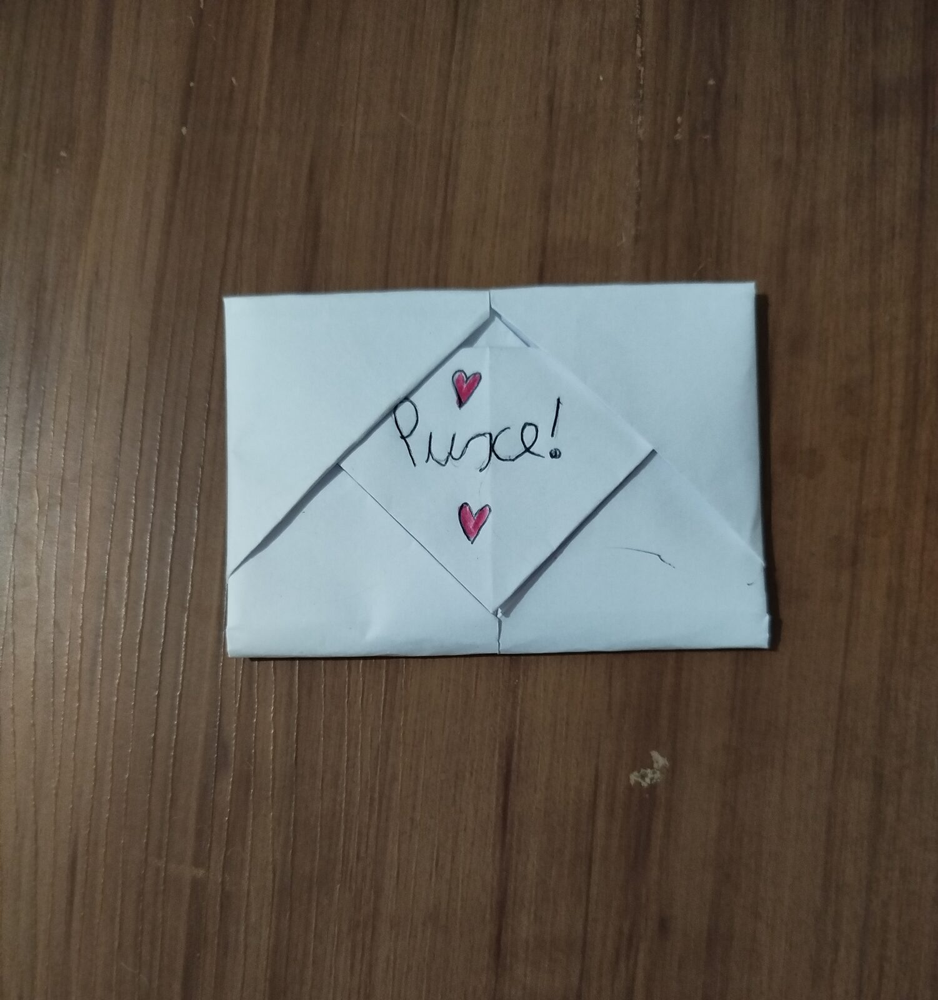
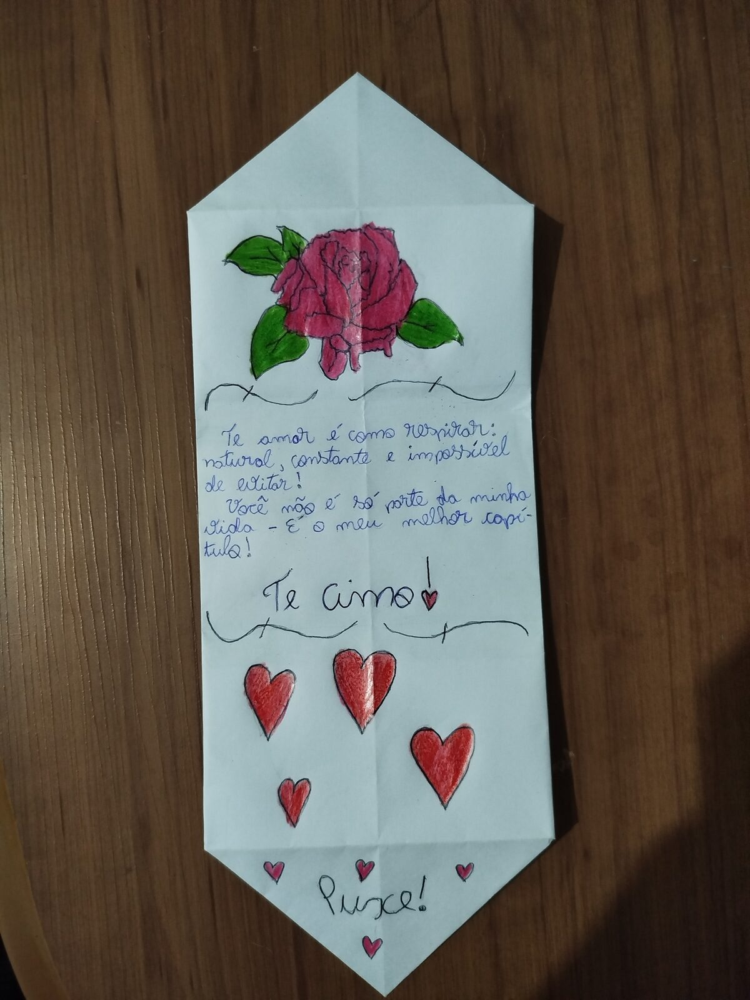
09/11/2025
Essa foi a carta em que eu abri o meu coração para você. Se me recordo bem, aquela carta que você escreveu antes realmente teve grandes efeitos em mim. Lembro que a li na aula de eletiva e me emocionei, mas não podia deixar as lágrimas caírem, porque estava com vergonha, já que tinha gente ao meu lado. Aquela carta derreteu o meu coração. Novamente, me esforcei para deixá-la bonita.
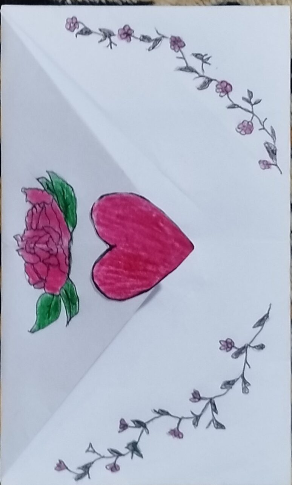
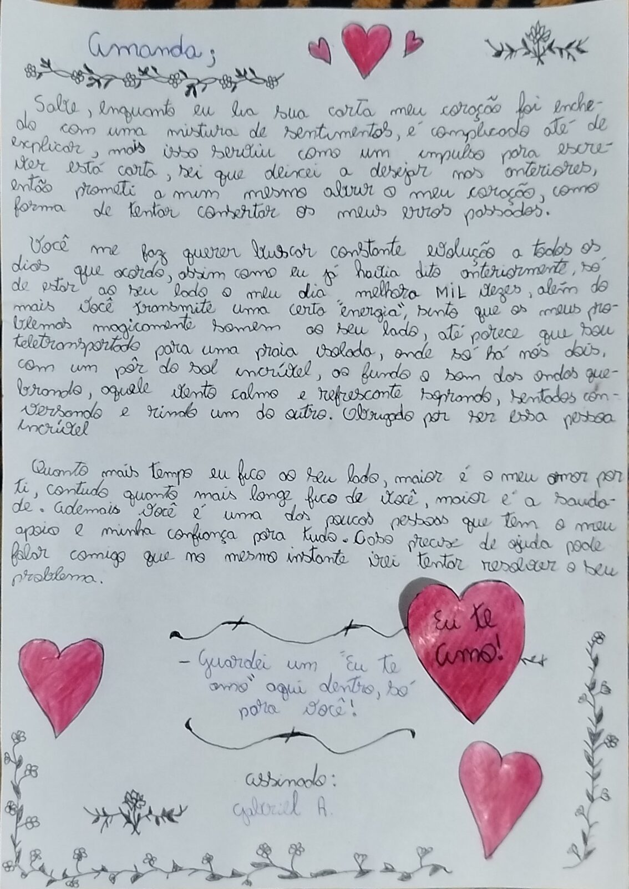
25/11/2025
Bem, eu não me recordo exatamente do motivo de ter escrito essa carta, mas imagino que tenha sido porque você deu alguma indireta. Na época, eu sempre tentava encontrar um jeito de fazer cada carta ser diferente da anterior. Dessa vez, resolvi usar a criatividade e fazer um buquê dentro da própria carta, algo que eu nunca tinha tentado antes.
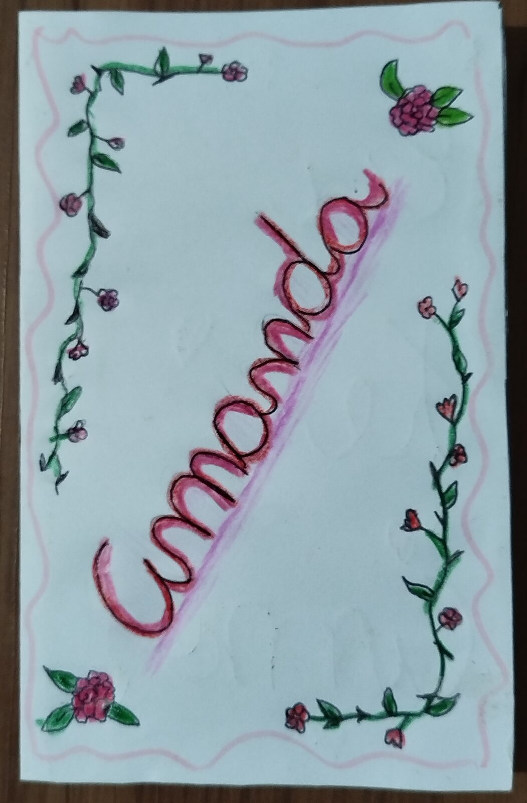
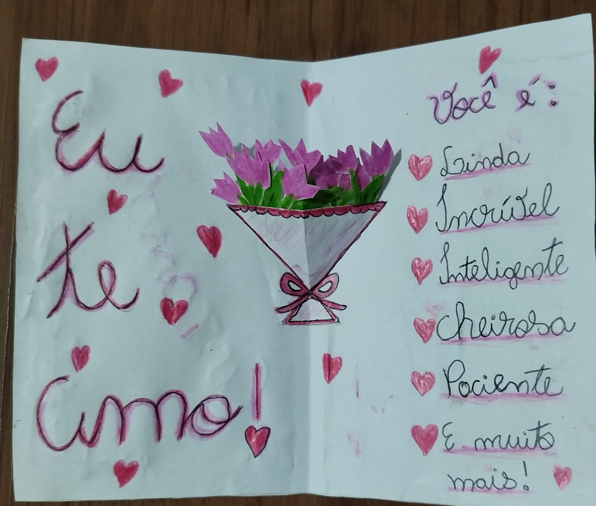
09/12/2025
Essa foi uma viagem muito boa e importante. Na ida, infelizmente, não aconteceram grandes coisas, principalmente porque eu estava passando mal. Eu também não tive coragem de tomar nenhuma atitude. Foi você quem tomou a iniciativa no nosso primeiro selinho e quem pegou na minha mão. Por minha culpa, acabamos perdendo alguns momentos perfeitos para nos beijarmos, como quando estávamos assistindo a filmes juntos. Durante as gravações, ficávamos distantes para que ninguém da sua família desconfiasse.
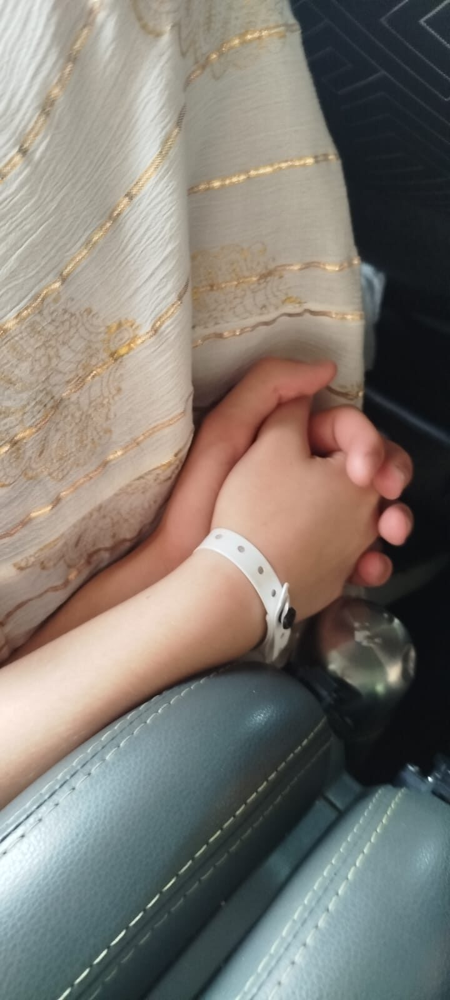
24/12/2025
Infelizmente, não encontrei uma foto da gente junto no Natal, mas sei que esse dia foi muito importante. Foi quando eu fui pela primeira vez à sua casa, e tudo aconteceu de última hora. Nesse dia, conheci o seu pai, sua mãe e seu irmão, embora ele tenha saído para a igreja logo depois. Eu estava bem envergonhado e até com medo de não saber comer direito com garfo e faca ou de não conseguir cortar um pedaço de frango. Apesar da vergonha, foi um momento muito especial e que vou guardar com carinho.
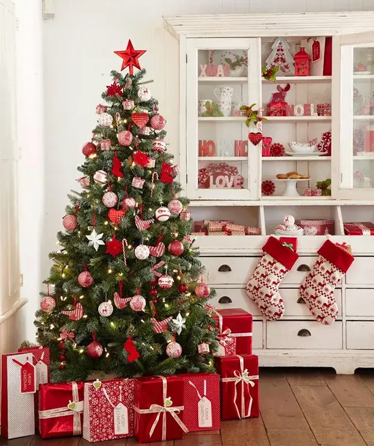
31/12/2025
Último dia do ano, e eu acordei passando mal. Achei que não conseguiria ir para a virada, mas, graças a Deus, melhorei e consegui ir. Não fiquei por muito tempo junto com você, mas já valeu a pena. O triste foi não ter conseguido te beijar.
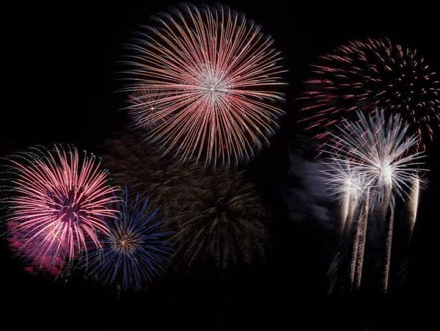
08/04/2026
Depois de muito tempo, a gente finalmente se viu de novo. Ficamos quase um mês sem nos encontrar, e durante todo esse período eu realmente tive medo de te perder. Foi um sentimento que me acompanhou todos os dias em que fiquei longe de você, e reencontrar você trouxe um alívio enorme, além de eu ter ido à sua casa também. Além disso, essa é uma das nossas primeiras fotos juntos, então ela tem um significado muito especial e não poderia ficar de fora.
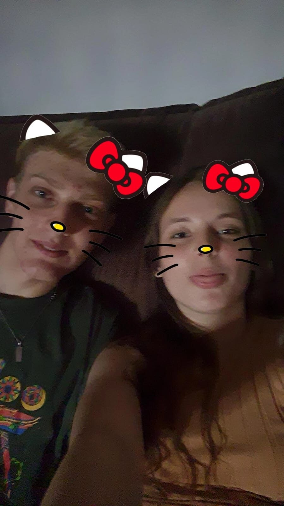
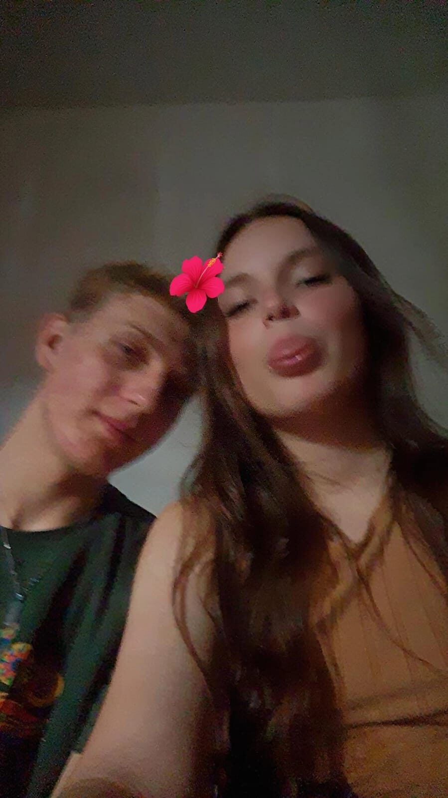
28/03/2026
Quem diria que, depois de 20 dias, finalmente chegaria o tão esperado pedido de namoro? Eu estava MUITO nervoso e com medo de que algo desse errado, principalmente por causa dos imprevistos que aconteceram naquele dia. Mesmo assim, consegui esconder o buquê e esperar o momento certo. Quando finalmente ficamos só nós dois na sala, pedi para você fechar os olhos e fui buscar os presentes. Na hora de fazer o pedido, fiquei nervoso e gaguejei, mas, no fim, tudo deu certo. Você disse "sim" e, a partir daquele momento, começamos oficialmente a nossa história como namorados.
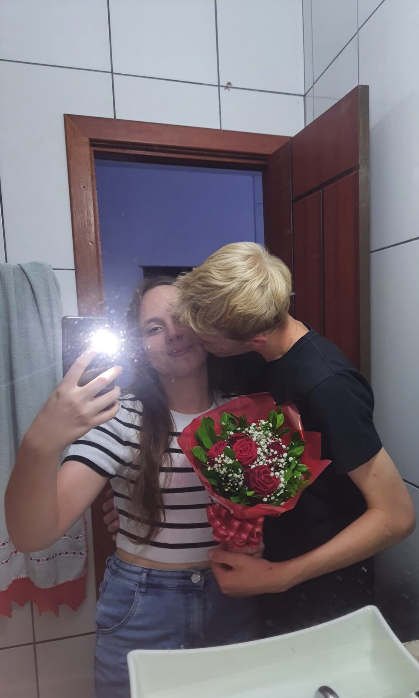
12/04/2026
É difícil acreditar que, nesse dia, você foi comigo à casa da minha vó. Você estava morrendo de vergonha dentro do carro e, quando chegamos, fomos cumprimentar toda a minha família, uma parte que imagino não ter sido muito fácil para você. Depois, ficamos um tempo conversando na varanda. Na hora do almoço, fui pegar comida para você e, mais tarde, fomos para a cozinha "conversar" com a minha família, mas você estava tão envergonhada que quase não falou nada. Depois de um tempo, fomos embora. Eu fiquei na sua casa e ainda recebi o meu presente de aniversário. No fim, foi um dia muito especial.
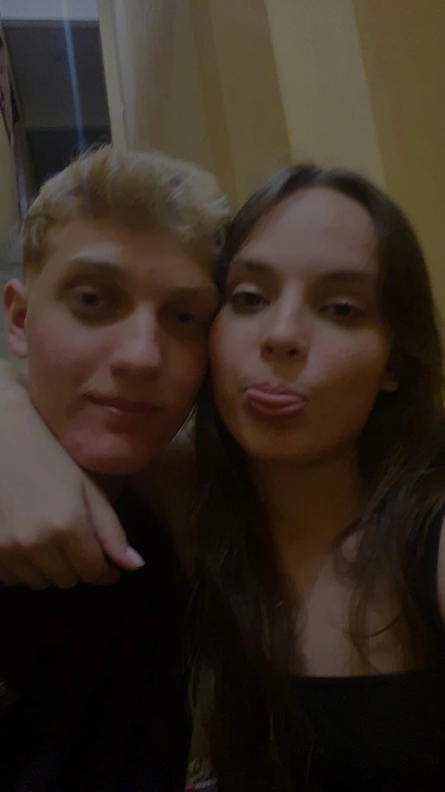
10/05/2026
Nesse dia, você resolveu passar uma máscara para tirar cravos do meu rosto. Eu me fiz de difícil, mas, no final, cedi e deixei você passar. Depois de um tempo, tiramos essa máscara da minha cara e, infelizmente, não saiu nada.
OBS: Só de imaginar que um dia você vai me maquiar já me dá arrepios.
24/05/2025
Era a festa da cidade e nós saímos. Tentamos ir com a roupa combinando, mas ocorreram alguns imprevistos e a gente acabou não combinando. Não lembro o dia que foi, acho que foi no domingo que eu comprei um presente para você (o espetão, kkkk). Melhor que um buquê! Nós não fomos em nenhum brinquedo. O único brinquedo que a gente (na verdade, você) jogou foi o de tiro ao alvo. Não sei agora se você acertou, acho que sim. Tivemos vários momentos bons e divertidos, como ficar falando do Julio e do Kaio Nass. Eu fui e cumprimentei o Marcelo, entre outros. A parte mais triste foram aqueles churros de sorvete que a gente não experimentou.
26/06/2026
Tenho que admitir, você estava certa de que essa viagem seria chata. Ela só não foi porque você estava do meu lado em todos os momentos. Eu te fiz muita raiva por não conseguir tirar uma foto boa de você. Só teve uma que eu consegui, que foi aquela de você na Casa da Bica. O resto, segundo você, ficou ruim, mas, no geral, valeu a experiência de fazer essa viagem.
05/07/2026
Que final de semana bom! No sábado à noite, ajudei o seu pai a carregar as calcinhas para a loja da sua mãe. Depois, saímos para andar pela rua, passamos pela casa da Rayka e fomos até a última rua para namorar um pouco. Ficamos um bom tempo sentados no banco e, quando saímos, demos de cara com o seu primo acompanhado de uma menina, indo para o mesmo lugar. Mais à frente, vimos um carro todo fechado e ouvimos um barulho estranho vindo de dentro. Pouco depois, a Rayka e o Thiago passaram de carro por nós, e descobrimos que eram eles que estavam naquele carro. Continuamos andando até o Pirilampo, onde esperamos bastante pelo nosso lanche. Depois de comer, voltamos para o Liquida e encontramos seus pais já indo embora, assim encerrando o sábado. No domingo, fui comprar um perfume para você, mas, por erro meu, acabei entrando em um sex shop. Depois disso, voltamos correndo para a sua casa para assistir ao jogo do Brasil contra a Noruega. No intervalo, seu irmão encontrou um escorpião no banheiro e, depois de pensar em como matá-lo, conseguiu usando uma vassoura. Infelizmente, o dia terminou com a derrota do Brasil na Copa do Mundo. Foi um final de semana cheio de momentos engraçados e inesperados.
10/07/2026
Dia da festa julhina da nossa escola, ele já começou muito bem, nós fomos na pescaria e você pescou um chapéu e eu um creme com cheiro de capim, depois eu fui de novo na pescaria e ganhei uma barra de chocolate, passamos todos os momentos das apresentações sentados juntos e rindo de algumas das apresentações tanto é que você compôs uma nova música para eu cantar (Nilza chegouuu, a felicidade acabouuu...), até que chegou o momento de eu dançar foi tão rápido e vergonhoso que eu nem lembro, mas você disse que eu dancei melhor do que no ano passado, bem o nosso dia acabou com eu e o Enzo tentando dançar forró, que você gravou.
12/07/2026
Chegou o dia de você receber os seus presentes de aniversário, sendo eles: um vestido, um livro ( Não é como nos filmes) e este pequeno projeto que foi feito especialmente para relembrar de alguns momentos de nós dois juntos.
15/07/2026
Feliz aniversário bebê, você completou 17 anos uhuuuuu, mesma idade que eu, mas continua sendo o meu neném. Saiba que eu Te amooo MUITOOOO!!!!!!. Tenho sorte de ter você ao meu lado todos os dias.
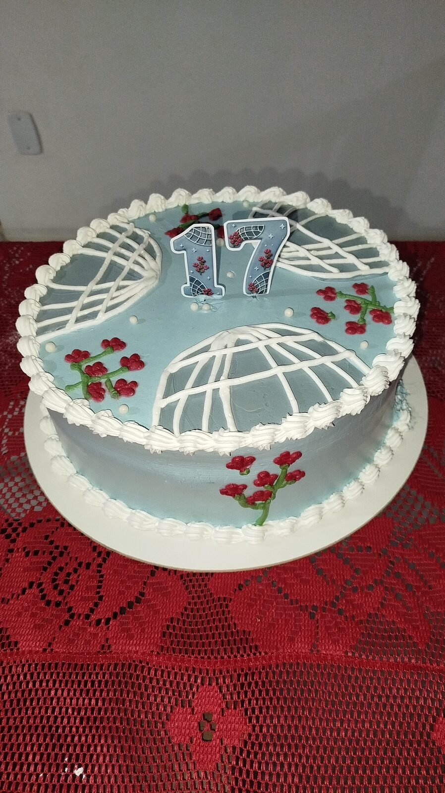
09/08/2026
Dia da aventura, assim vai ficar guardado na minha cabeça, porque nós (seu pai, sua mãe, seu irmão e nós 2) fomos almoçar fora e depois fomos até o Mirante do Vale, você morreu de medo na hora da subida para chegar no topo, tanto é que a nós 2 descemos do carro e subimos a pé, lá de cima observamos o horizonte e tiramos várias fotos e rimos muito.
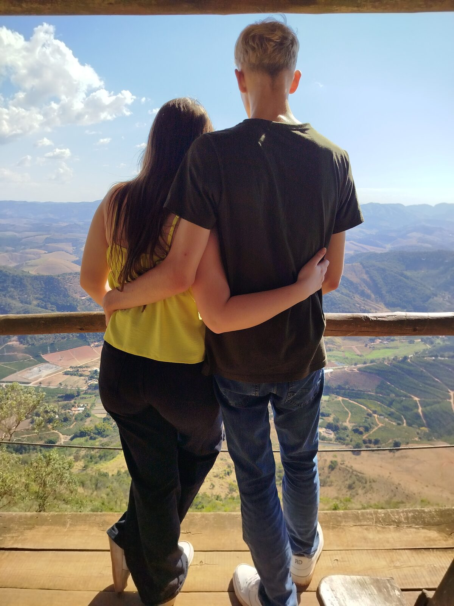
15/08/2026
Foi minha 1ª vez indo junto de você para os desbravadores, em uma "reunião", nesse dia recebi uma surpressa de última hora, nós iamos para a casa da sua vó (era para eu conhecer ela no domingo), logo depois saimos e fomos visitar ela, ao chegarmos e entrarmos na casa, vocês decidem fazer um pequeno culto para ela cantando algumas músicas. Preciso admitir que quase chorei em alguns momentos, se passou um tempo e ficamos só nós 2 com ela, você me apresenta e fala que fui eu que dei os inhames que ela comeu um dia, após isso conversamos mais um pouquinho e depois o seu pai chegou e fomos embora. Foi muito bom conhecer a sua vó.